Library · 2015
Seashore Library
Vector Architects / Dong Gong
Qinhuangdao, China
The library brings together reading, meditation, rest and a separate activity room. Its clearest connection is THINK: different rooms offer public reading with broad views or quieter, more private reflection beside the sea.
The design began in section. Raised seating preserves views over other readers, while a lower, darker meditation space frames narrow shafts of light. Timber formwork leaves grain in the concrete, giving the heavy shell a tactile surface associated with the marks found in sand.

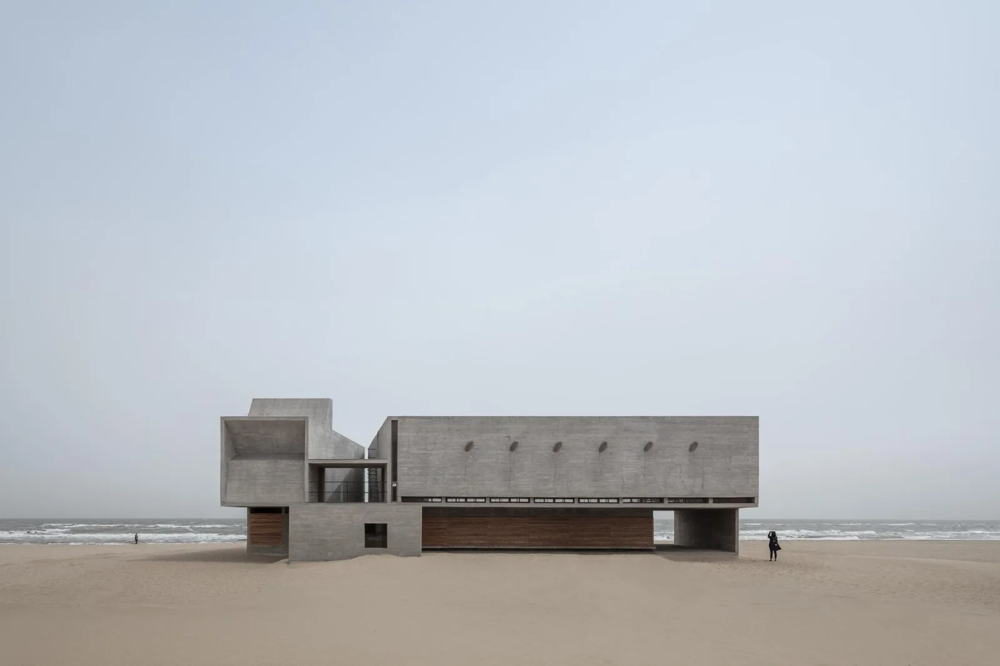
Relevant connections
THINK
Reading and meditation have distinct spatial conditions, from open sea-facing terraces to an enclosed quiet room.
Images and drawings / 12

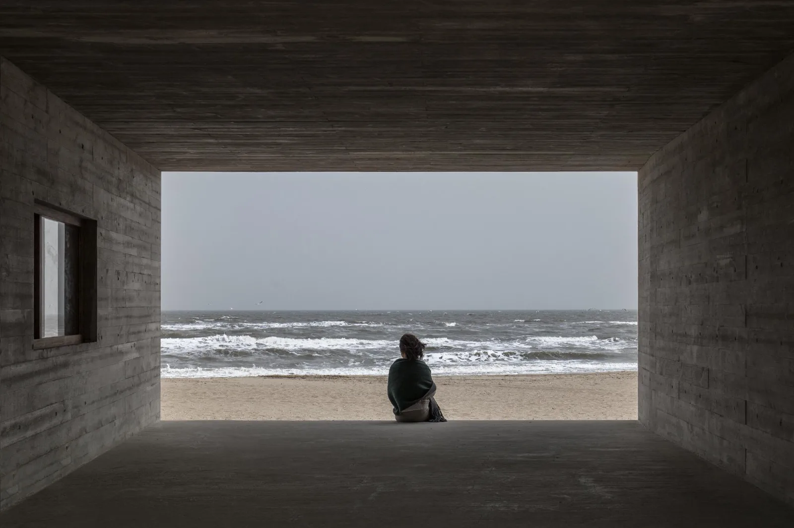

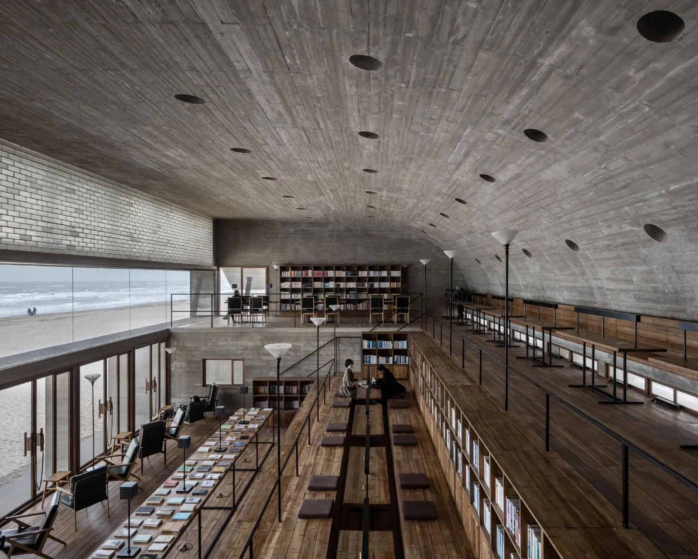

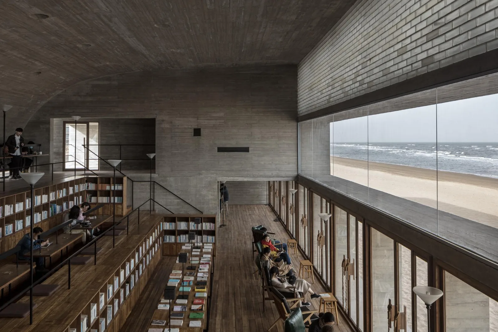

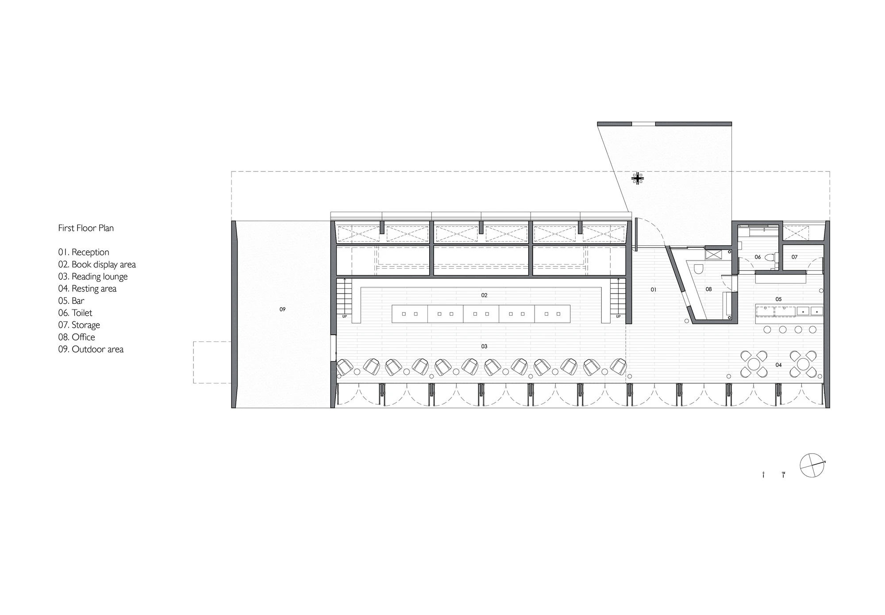

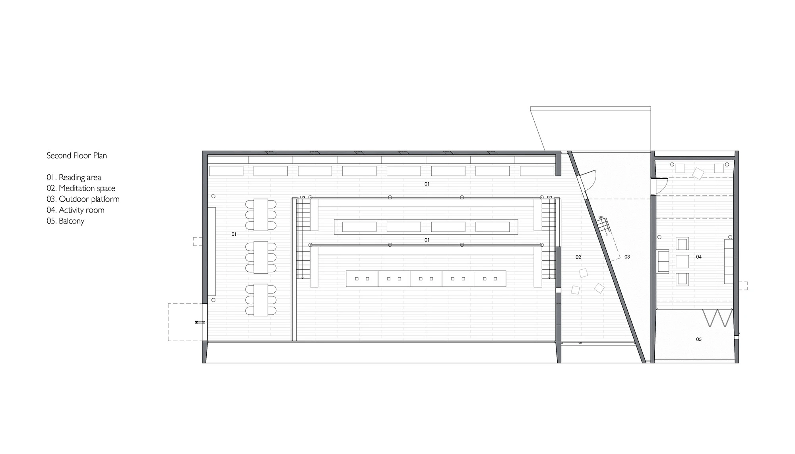

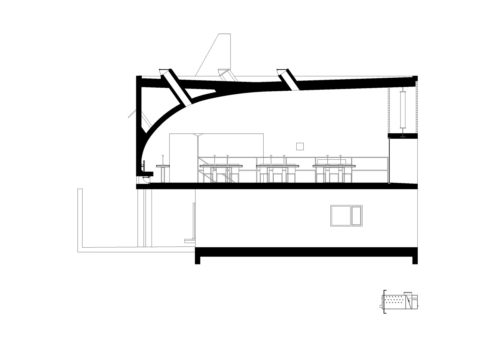

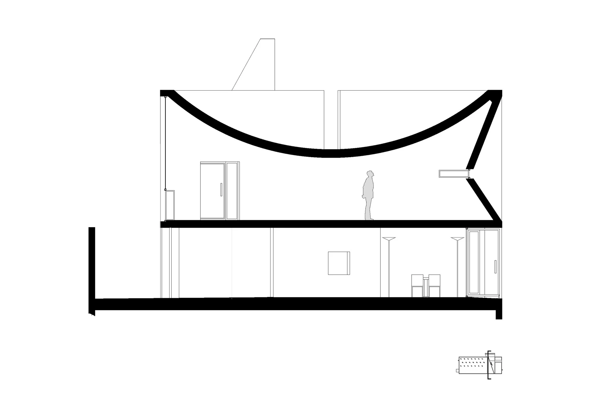

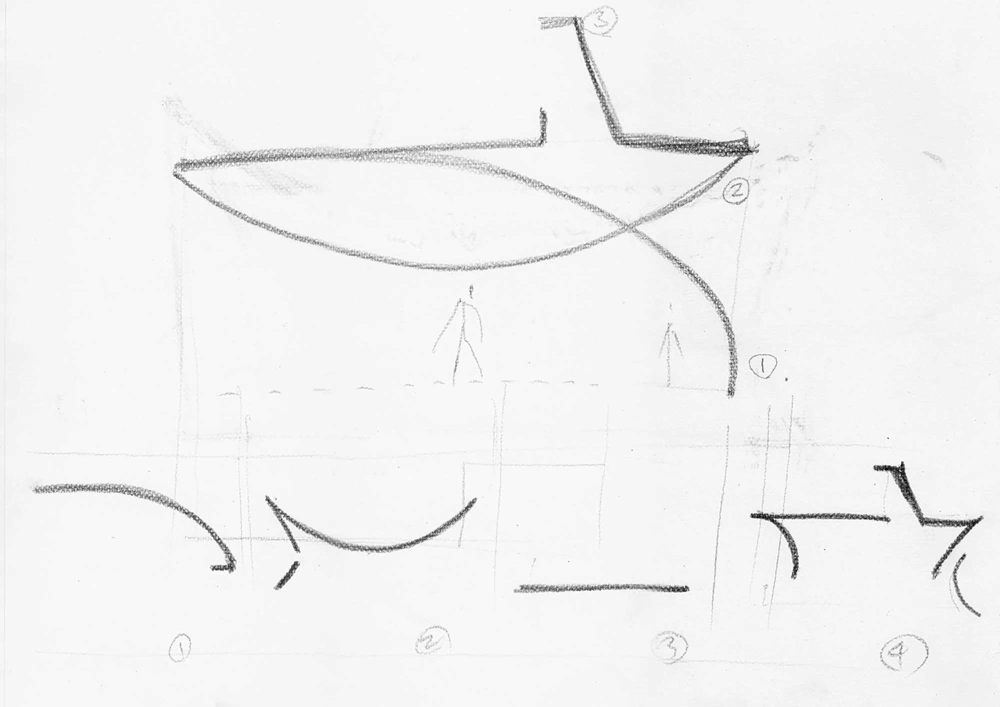

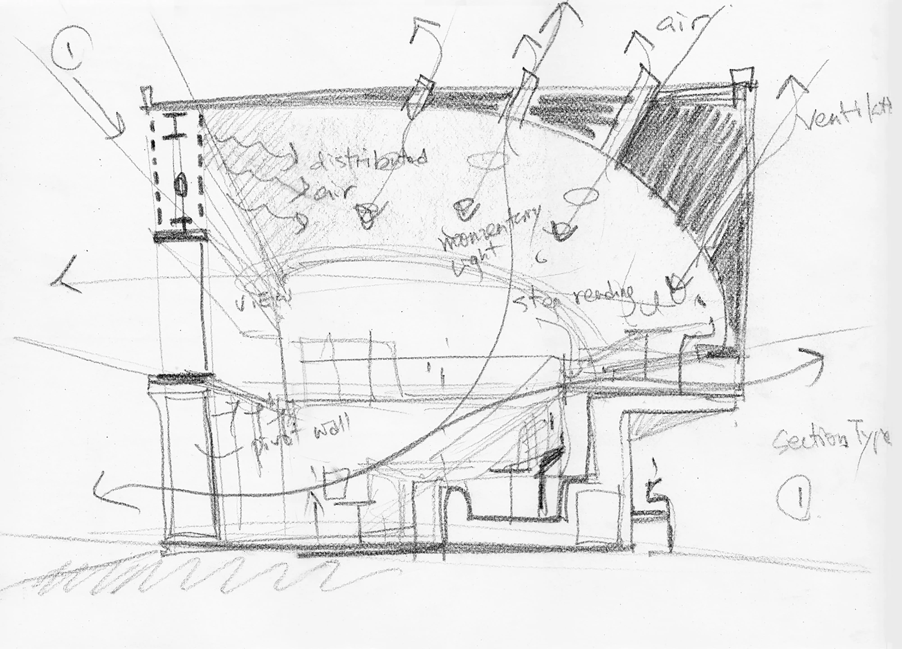

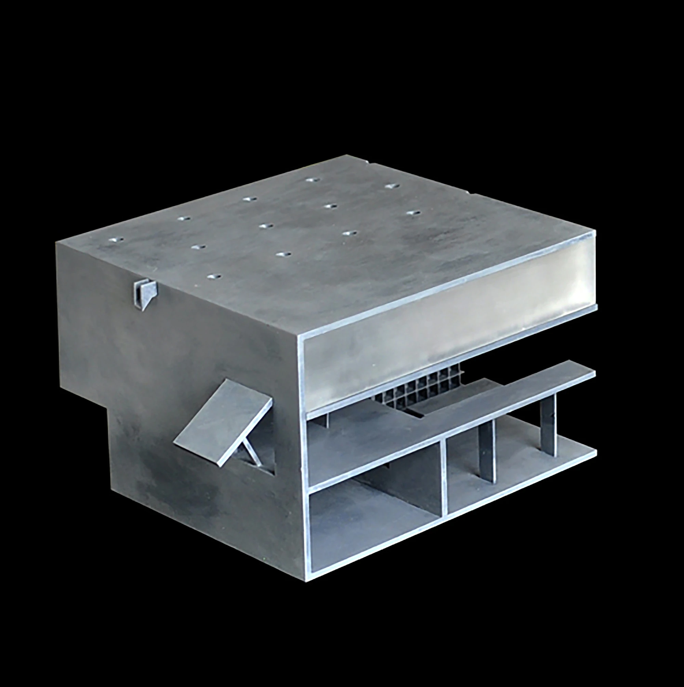

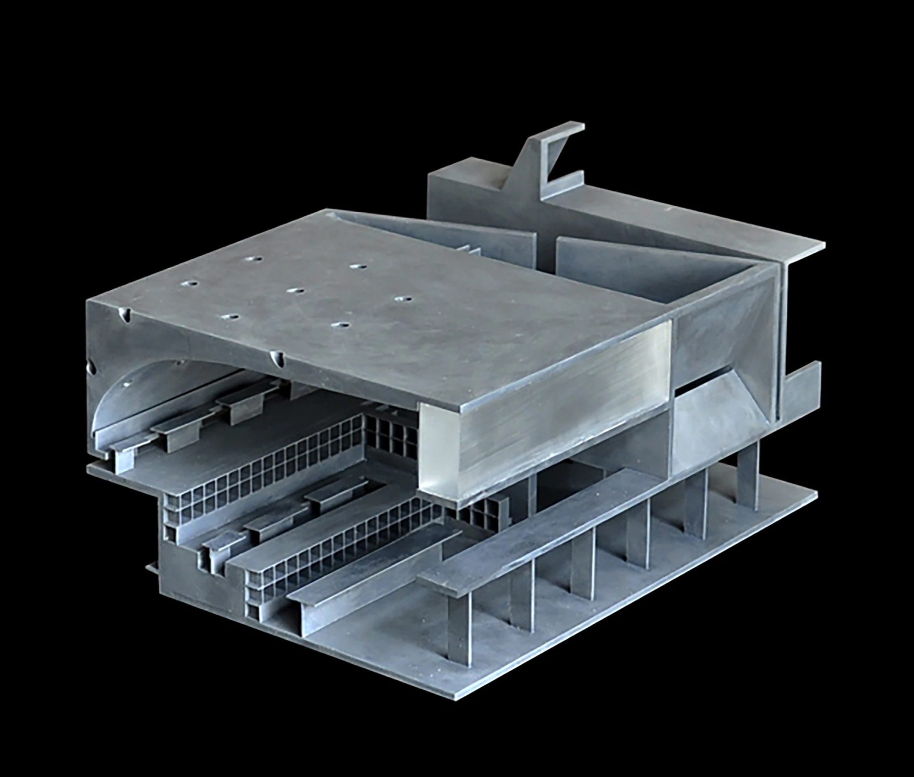